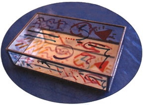

Left: Deana begins scoring the glass for the box top. Middle: The box seams need to be soldered twice to ensure that they are smooth and slightly rounded. Right: Paint the inside of the lid for an interesting look.